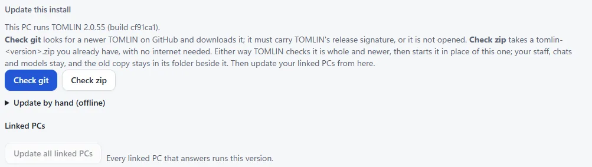

Updates
Check for updates, update via zip, update linked PCs, the host PIN.
This PC
The software: Manage updates under Settings opens Update this install, and the My PC window has Update TOMLIN beside its version. Check for updates asks GitHub for the newest TOMLIN and, when it is newer, offers to download it; a download must carry TOMLIN's release signature, or it is not opened.
Update via zip takes a tomlin-<version>.zip you already have, picked together with its tomlin-<version>.zip.sig (no internet needed; Update by hand (offline), under it, lists the steps).
A zip whose signature is missing or fails gets a red warning: Cancel is the default, and Install anyway is only for a zip you trust, such as one you made yourself. Either way TOMLIN checks it is whole and newer, starts it once as a test (a version that does not come up is not installed, and nothing changes), then starts it in place of this one; your staff, chats and models stay, and the old copy stays in its folder beside it. This needs TOMLIN started by its installed program or by Start TOMLIN.cmd.
Then Update all linked PCs updates each linked PC that is behind and allows it.

The Manage updates page also lists the steps to take with a zip you have: get tomlin-<version>.zip and its .sig into one folder (from TOMLIN's releases on GitHub, or copied from another PC, a USB stick will do), press Update via zip, pick both (hold Ctrl), then Update now. Or run TOMLIN-Setup-<version>.exe, which updates this install in place.
A linked PC, from here
One linked PC at a time: when it runs an older TOMLIN, its card has a yellow (!) and its window says Outdated: 2.0.32 (this PC 2.0.33) with Update it, or why it cannot be updated from here. On that PC, tick Allow host to update TOMLIN remotely first. Only the files that changed are sent; that PC puts the new version in a folder beside its copy (the old one is kept for going back), backs its data up, and starts the new version in the same window, once nothing is running there. It must run as the installed TOMLIN (Install TOMLIN.cmd) or from Start TOMLIN.cmd. A PC older than 2.0.33 cannot be updated this way: install the new version there by hand once.
A linked PC, from there
The other way round: when a linked PC runs a newer TOMLIN (or the same version with other files) and its owner ticked Let linked PCs pull TOMLIN updates from here there, its window says This PC runs 2.0.61; "Worker PC" runs 2.0.62 with Update this PC to 2.0.62. Someone at this PC presses it: no PIN of that PC is asked, since nothing changes there. Only the files that differ are copied, each is checked as for Update it, and this PC starts the new version beside its old one. It must run as the installed TOMLIN or from Start TOMLIN.cmd.
The host PIN
The host PIN (Network, Linked PCs, Set the host PIN): one PIN of 6 to 12 digits, or a password of 6 characters or more, typed on this PC for all the linked PCs. Setting it gives it to each linked PC: each asks for its own app lock PIN once, then holds the host PIN for this PC only. From then on Update all linked PCs asks for the host PIN once and updates every PC that holds it; a PC that does not asks for its own PIN, as before. The host PIN also turns a PC off or deletes a model there, and the ticks on that PC are still needed. This PC keeps only a scrambled copy of it. Change the host PIN gives the new one to the PCs that hold the old one without asking their own PINs again; Turn the host PIN off takes it back from every PC that answers.